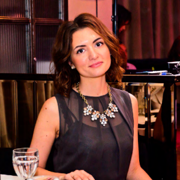
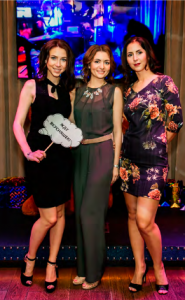
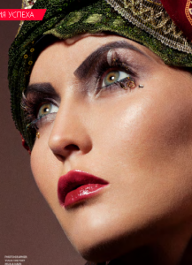
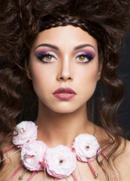
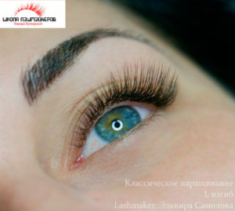
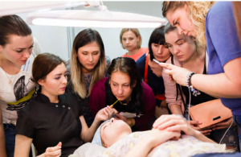

Эльвира Самолова — мастер эксперт по наращиванию ресниц, тренер и владелец школы lash-мейкеров alllashes. Судья международных чемпионатов и докладчик на конференциях lash&brow индустрии. Владелец собственного бренда shine, директор магазина товаров и материалов для lash-мастеров «all–lashes»
История о том, как из lash-мейкера, который наращивал ресницы на раскладном кресле, сидя на полу у себя дома, можно вырасти до директора лидирующего lash-магазина с двумя собственными брендами в производстве
«Если вы осваиваете новый бизнес только ради денег, возможно, вы будете их зарабатывать. Но настоящего кайфа и самореализации от работы вы не почувствуете»
Важный опыт работы до бьюти индустрии
Мой путь в бьюти индустрии начался в 2009 году. В России был финансовый кризис. Я была студенткой третьего курса технического университета и работала официанткой в сетевой кофейне Новосибирска.В течение нескольких месяцев подряд я была удостоена звания «лучшего официанта месяца» — эту награду я получала за самые большие продажи в месяц и самые высокие чаевые. Это значимый эпизод моей биографии! Именно в этой кофейне я сделала два важных вывода, которыми с тех пор руководствуюсь:
1. «клиент должен получить больше, чем просто кофе»
Я всегда предлагала добавить в кофе самый вкусный сироп, а в заказ — самый свежий десерт. Это делалось не ради финансовой выгоды, а, в первую очередь, для эмоционального удовлетворения. Мне всегда хотелось, чтобы гость чувствовал заботу и уходил из кофейни с улыбкой и приятным послевкусием
2. «сложный / конфликтный клиент — это поле для собственного роста».
Всех проблемных, злых и недовольных гостей направляли ко мне. Первое время было тяжело их усмирить и повернуть на сторону «добра», но когда я выработала этот навык, я стала с удовольствием принимать таких гостей. Сейчас этот навык мне очень помогает в бизнесе. Ведь если отвечать агрессией на агрессию, будет война. А если вместо агрессии возвращать улыбку и понимание, вы получите сотрудничество. Всегда необходимо слышать и слушать людей, делая все возможное, чтобы им приятно было с вами работать.
Первый опыт работы lash-мейкером
Зимой 2009 года я обучилась наращиванию ресниц.В то время курсов еще не было, все только зарождалось, и мастер учила меня на дому. «Обучающий курс» длился несколько часов и состоял из чаепития на кухне и практики на модели. Выглядело это так: девушка лежит на кровати, мы с преподавателем сидим на полу. Поставив по 20 кривых ресниц из банки в веко, сверху мы промазали это зубочисткой с клеем для закрепления результата. И отпустили девушку. Сейчас, как вспомню, — плакать хочется.Потом я стала наращивать ресницы дома за 500 рублей. Клиентка лежала на раскладном кресле, а я сидела на полу и молилась, чтобы наращивание закончилось в кратчайшие сроки, так как спина и ноги безумно затекали. Изза этого и изза отсутствия примеров качественно выполненного наращивания мое развитие как мастера было очень долгим
Первый карьерный рост: из «девочки, которая наращивает на дому» — в lash-мастера
Как я сейчас уже понимаю, я делала кошмарные работы. Родные реснички клиенток очень страдали после моего «супер» наращивания «норочкой»… Но мне очень нравилось преображать лица девушек и видеть в их глазах искреннюю радость от обновления своего взгляда.И я пришла к тому, что пора развиваться. Начала искать хорошие материалы уже вне нашего города. Помню, как заказала ресницы из Москвы — 350 руб. за коробочку. Помню, с каким трепетом ждала ее, как была рада ровным и качественным волоскам в коробочке.Через 2–3 месяца купила кушетку (так сказать, улучшила свой homeсервис) и стала оттачивать технику. Как у многих мастеров, один глаз поначалу получался густым и красивым, а второй — так себе.Через 9 месяцев я настолько загорелась желанием расти и совершенствоваться в lashсфере, что приняла решение снять офис. Уже хотелось выйти из дома, чтобы изменить отношение клиентов к своей работе и к себе, доказать, что это не просто хобби, а действительно стоящая работа!Вместе со знакомым nailмастером мы сняли офис в Новосибирске. Это была точка невозврата. Офис — это ответственность. Ежемесячная плата за него пугает каждого мастера. Плюс легализация услуг и т. д. Но я рискнула!Мы подобрали недорогой, но светлый и чистенький офис рядом с метро, чтобы наши клиенты добирались максимально оперативно. Я заметила, что когда я сняла кабинет и надела белый халат, клиенты стали уважительнее относиться к моему труду. Из «девочки, которая наращивает реснички на дому» я выросла в «lash-мастера».Стоимость услуги уже поднялась с 500 руб. до 1000, а еще через 6 месяцев после переезда — до 1300 руб.
Профессиональный рост: пришлось повышать цены, чтобы уменьшить число клиентов
В этот период времени мы с подругой, тоже lash-мейкером, съездили в Красноярск на мастеркласс Ольги Добронравовой и Виктории Савиной. Они были первыми, кто предлагал мастерам качественное по тем временам обучение. Именно от них я узнала об объемном наращивании.С первого конкурса по наращиванию ресницам на Урале я привезла свой первый и единственный кубок. Это сейчас конкурсы проводятся каждый месяц, а в то время они были редкостью. Но опыт был бесценный — ведь столько единомышленников встретилось под одной крышей!Через несколько месяцев после переезда в офис мой доход был выше средней зарплаты по Новосибирску. Я могла спокойно оплачивать аренду, закупать хорошие материалы, и еще оставались деньги на развитие.
Я не склонна к шопингу и считаю, что деньги должны «работать», а не лежать на полке. Поэтому приняла решение о продаже качественной продукции для мастеров. В магазинах Новосибирска были только китайские материалы, и я стала закупать продукцию для наращивания ресниц оптом через Москву, чтобы мастера города имели возможность работать на хороших ресницах.Продажи занимали мало времени и внимания, основной упор был на технику.Результат не заставил себя ждать: через полтора года от клиентов не было отбоя. Мне даже пришлось повысить цену до 1700 руб. (на тот момент эта цена была уже выше средней по Новосибирску).Многие мастера хотели освоить мою технику, ведь именно с моей подачи мастера постепенно стали отходить от супердлинных ресниц на внешних уголках. Несколько лет я практиковала короткие длины во внешнем уголке и видела результат: ресницы носились дольше, не перекручивались и не провисали.Уже в начале 2011 года я активно пропагандировала эту технику на форумах и при живом общении. Сейчас, как мы знаем, это прописная истина для мастеров
Неизвестная, беспощадная, но перспективная Москва.
В октябре 2011 года я решила покончить с режимом «белки в колесе» без личной жизни. И отправилась навстречу новым возможностям — переехала в Москву к своему будущему мужу. Он, кстати, до сих пор не понял, как можно было оставить бизнес ради человека, который ничего не обещал.Уверена, каждый в определенный момент стоит перед выбором — карьера или личная жизни. Тогда я уже уработалась вдоволь, а личной жизни как таковой не было.Переезд был очень рискованным, и у меня не было четкого плана. Честно признаться, Москву я очень не любила, никогда не хотела тут жить, но на что ни пойдешь ради любви!Здесь никто меня не знал, ни как мастера, ни как человека. Друзеймосквичей не было.Начало было банальным: размещение объявлений на Avito, «Из рук в руки» и т. д.Но… за 3 месяца — ни одного клиента. Потом по 2–3 девушки в месяц. У меня началась жуткая депрессия. Очень хотела вернуться обратно в Новосибирск, ведь там меня ждали клиенты! Они писали, просили вернуться и нарастить им ресницы, а в Москве — тишина…Однажды я объявила мужу, что начинаю искать работу, хоть офисменеджером. В ответ он «подставил свое мужское плечо» со словами: «Ты проделала много работы, ты «горишь» этим делом. Еще немного, и ты наберешь ту критическую массу, когда от клиентов не будет отбоя».Я до сих пор благодарна ему, что в тот момент он подобрал нужные слова. Ведь у нас не было больших денег на существование в Москве, а накопления из Новосибирска уже подходили к концу. Но он верил в мой успех!Активное размещение объявлений, повышение квалификации (время позволяло ходить по курсам), бесплатное наращивание моделям для портфолио — вся эта активность дала плоды. Через год у меня набралась клиентская база. Это было непросто, так как моя цена тогда была от 3000 руб. Средние цены в Москве в тот период составляли 1500–2000 руб. у мастеров на дому, 1500–3000 руб. — в салонах.По прошлому я понимала, что поднимать цену гораздо сложнее, чем изначально поставить высокую планку и тянуться к ней. Именно фактор высокой цены на мои услуги позволил довести технику наращивания до идеала, вникнуть в клиентский сервис и маркетинг.Каждому мастеру рекомендую прочитать книгу «Клиенты на всю жизнь» Карла Сьюэлла.
Первые шаги: обмен опытом естественно превратился в преподавание
 Попробовав в себя в разных сферах (макияж, эпиляция, наращивание волос), я поняла, что распыление ни к чему хорошему не приводит — по всем фронтам ты будешь середнячком. Исходя из полученного опыта, по максимуму читала и писала на форумах. Только обмениваясь опытом, мы можем расти и развиваться.Постепенно стали подтягиваться студенты, ведь немногие мастера действительно готовы делиться своим опытом на курсах.Наслушавшись историй о «жадных» преподавателях, я поняла — пора! Так началась разработка учебной программы «школы лешмейкеров Эльвиры Бухтияровой» (это первое название моей школы).Ученики рекомендовали мои курсы, давали положительную обратную связь. Это мотивировало на дальнейшее развитие в данном направлении: постоянную модернизацию курсов, улучшение практической части занятия и работу над собой.Преподавание — это непросто. Мы передаем свое виденье и навыки. Не все и не сразу могут воспринять информацию должным образом, поэтому важно уметь найти подход к каждому, объяснить на понятном и близком ему языке. Мне пришлось много читать о психологии человека, о различных способах донесения информации и даже проходить специальные курсы.Студенты, ощущая полную отдачу, рекомендовали меня другим мастерам и сами возвращались на следующие курсы.
Попробовав в себя в разных сферах (макияж, эпиляция, наращивание волос), я поняла, что распыление ни к чему хорошему не приводит — по всем фронтам ты будешь середнячком. Исходя из полученного опыта, по максимуму читала и писала на форумах. Только обмениваясь опытом, мы можем расти и развиваться.Постепенно стали подтягиваться студенты, ведь немногие мастера действительно готовы делиться своим опытом на курсах.Наслушавшись историй о «жадных» преподавателях, я поняла — пора! Так началась разработка учебной программы «школы лешмейкеров Эльвиры Бухтияровой» (это первое название моей школы).Ученики рекомендовали мои курсы, давали положительную обратную связь. Это мотивировало на дальнейшее развитие в данном направлении: постоянную модернизацию курсов, улучшение практической части занятия и работу над собой.Преподавание — это непросто. Мы передаем свое виденье и навыки. Не все и не сразу могут воспринять информацию должным образом, поэтому важно уметь найти подход к каждому, объяснить на понятном и близком ему языке. Мне пришлось много читать о психологии человека, о различных способах донесения информации и даже проходить специальные курсы.Студенты, ощущая полную отдачу, рекомендовали меня другим мастерам и сами возвращались на следующие курсы.
Хорошие материалы для обучения — в собственном магазине
После самого курса часто вставал вопрос: «Где купить хорошие материалы для работы?»Я отправляла в 1–2 магазина в Москве (больше на тот момент не было), но этот вариант не всех устраивал. Иногородним студентам было крайне неудобно ехать в другое место, поэтому постепенно я начала закупать материалы мелким оптом для своих учеников. Вы не поверите, где хранилась продукция: в течение полугода витрина с материалами стояла около моей кровати.Через год я открыла свой маленький интернетмагазин.Спасибо моей сестре, которая разработала мне простой шаблон магазина, и мужу, который терпел мою работу по 15 часов в сутки
Первый офис в Москве, первые мастерклассы за границе
В 2012 году я сняла свой первый офис в Москве. Он был большой, с 3 кабинетами, но при этом я работала одна, без мастеров и сотрудников. Оплата аренды «съедала» весь заработок, я выходила «в ноль». Но чтобы развиваться, было необходимо брать именно большое помещение — на перспективу.Я стала еще активнее работать, искать мастеров и развивать продажи.Интерес к магазину и курсам возрастал. В этот год меня пригласили с выездным мастерклассом в Италию. Затем последовали Донецк (Украина) и Караганда (Казахстан).Но обучение, особенно выездное, с неимоверной скоростью высасывало из меня силы. Перелет, огромный чемодан с методичками и материалами для студентов, разные часовые поезда, иной менталитет…Путешествия и выездные курсы дали мне возможность вырасти как педагогу, увидеть, как поразному воспринимают информацию люди в других странах. Но после некоторых размышлений я решила, что мне лучше вести обучение стационарно, в Москве. Сюда можно прилететь из любого уголка земного шара. Создав комфортные учебные места, я стала развивать курсы именно в Москве.
Студия растет: появляются первые сотрудники
В 2012–2013 годах я начала набирать персонал — в одиночку я уже не справлялась. Я помню своего первого сотрудника — это была мастер Светлана. Мы до сих пор общаемся и поддерживаем отношения. Потом появился администратор, отвечающий за продажи и запись клиентов.Сразу скажу: многие, как и я, боятся набирать персонал. Появляются мысли: «Как ему платить?», «Будет ли у него полная загруженность?» и «А если он будет воровать?»В этой ситуации меня спасли книги и тренинги по управлению. Я получала из каждого канала уверенность в своих силах и понимание каждого последующего шага. Выстраивая отношения с сотрудниками, я закладывала кирпичики доверия и зажигала их своими идеям
Первый собственный бренд — Shine
В 2014 году после долгих мучений с материалами (не устраивали то качество, то цена, то поведение продавцов) я сделала заказ на первую партию ресниц и препаратов своего бренда — Shine.Первый дизайн разрабатывала сама. Минимальные навыки работы в графических программах я получила еще в университете. Сейчас цветная абстракция с этикеток Shine знакома многим мастерам в разных городах России. В августе 2014 года я получила первую партию, и счастью моему не было предела!Как раз в то же время я получила первое приглашение на конкурс в качестве судьи. Это была большая честь для меня. Первые конкурсы я судила крайне строго, везде искала идеал. Позже научилась более грамотно оценивать работы мастеров в разных категориях.Быть судьей — это очень непростое дело. От поставленных баллов может зависеть дальнейшее развитие мастера
Выбор главного из трех направлений
К концу 2014 года я буквально разрывалась на части: студия с двумя мастерами, обучающие курсы и магазин. Работала по 14–16 часов в сутки без выходных.В нужный момент, когда ситуация достигла пика и я валилась без сил, в моей жизни появился важный человек. Он сказал: «Продолжая работать в том же темпе, ты скоро перегоришь и потеряешь интерес. Выбери одно направление, где есть максимальная возможность для твоего личностного роста!»После долгого анализа я поняла, что мне надо отказаться от студии и курсов, а заниматься исключительно магазином.Сейчас я понимаю, что это было правильным решением, но в тот момент в моих глазах читался ужас. Ведь я не занималась продажами, у меня нет опыта работы в магазине или создания бизнеса.И все же интерес и жажда нового победили!Материалы для наращивания ресниц Shine — мой космос, благодаря которому хочется создавать невероятные вещи! В линейку товаров и в сам магазин alllashes.com я вкладываю всю душу, так как я знаю, с какими проблемами и потребностями сталкивается мастер при покупке и использовании материалов.С июня 2015 года я стала активно набирать сотрудников чтобы обеспечить растущий спрос на продукцию. Сейчас в нашей команде более 15 сотрудников и 26 региональных представителей бренда.Любой бизнес будет развиваться только в том случае, когда в команде искренние и разделяющие интересы основателя люди. Каждого нового человека я отбираю лично и долго, ведь мы создаем свою галактику, где каждый рад предложить клиенту или коллеге помощь и хочет, чтобы клиент ушел от нас с улыбкой. Отбор представителей мы также ведем очень жестко. Нет цели «взять» количеством, мы работаем всегда на качество! Поэтому в среднем мы одобряем только 1 из 5 заявок на сотрудничество.В 2016 году состоялся первый съезд представителей продукции Shine. Команда настолько хорошо подобрана, что после четырех дней мы не могли расстаться. Мы мыслим, думаем в одном направлении. Учась на тренингах, мы перенимали опыт, поддерживали и мотивировали друг друга
Участие команды All Lashes в beauty выставке InterCHARM
В ноябре 2015 года я исполнила свою мечту: наша компания All Lashes приняла участие в самой масштабной бьютивыставке России InterCHARM. Все 4 дня наш стенд был заполнен мастерами, жаждущими приобрести ресницы Shine. Такого ажиотажа мы не ожидали.После этой выставки вся команда увидела, что многие клиенты приходят в наш магазин, в первую очередь, «за отношением», а уже потом — «за ресницами».Мы со многими компаниями и мастерами строим долгосрочные отношения, часто приглашаем преподавателей с выездными мастерклассами или проводим дни открытых дверей для наших клиентов.Общение вживую — всегда в цене! Поэтому наш праздник «День открытых дверей» в первый раз посетило около 12 человек, а последний — уже 40 мастеров. Мы рады видеть каждого гостя.С 2015 год я веду канал на YouTube, где делюсь с мастерами своими наработками и освещаю прошедшие события.https://www.youtube.com/channel/UCvFMHzANeu_qyxtUJbFzsyAС 2016 года мастера имеют возможность пообщаться со мной в режиме онлайн и задать насущные вопросы в Periscope.И совсем недавно, в июне 2016 года, мы запустили в продажу новый бренд — Hittolash. Ничего лишнего: только самые необходимые для работы материалы, простая упаковка, хорошее качество материала без лишних украшений и «фишек».Это бренд для мастеров, которые работают в небольших городах или ставят небольшие цены за свои услуги. Мы хотим, чтобы у каждого мастера была возможность работать на хороших материалах
Пока я развивалась как мастер, преподаватель и затем владелец магазина, параллельно развивался и lashрынок. Появилось много конкурсов, конференций. За последние полтора года я более 10 раз участвовала в них в качестве судьи. Это позволяет мне наблюдать за ростом профессионализма и мастерства lash-мейкеров.Наша компания часто участвует в данных мероприятиях в качестве спонсора. Так мы помогаем мастерам развиваться и с каждым днем делаем их работу еще более приятной и легкой.Раньше мы оттачивали технику сами, долго и упорно, через испорченные ресницы клиентов. Сейчас же очень много качественных курсов и много хороших материалов. Но попрежнему необходимы волшебные руки мастера, чтобы превратить это все в превосходное наращивание!Общаясь с большим количеством мастеров на курсах, форумах, конкурсах или онлайн, я понимаю, что большинство lash-мейкеров не уверены в своих силах. Они равняются на «мастера с соседней улицы» и сами себя загоняют в шаблоны и рамки.Поэтому хочу сказать всем lash-мастерам
- если вы действительно горите этим делом
- если вы работаете не только чтобы заработать $,
- если вы постоянно стремитесь стать лучше (повысить квалификацию, улучшить сервис с клиентами и т. п.),
- если вы готовы работать с ненормированным графиком,
- если вы не опускаете руки при первой же неудаче,
- если умеете ждать и настойчиво идти к цели,
- то вы можете добиться всего, на что решитесь! И не важно, связано это с ресницами или с чем-либо еще
Сложность первых шагов в любом деле:
- Нехватка уверенности в себе и, соответственно, в завтрашнем дне.
- сомнения в выборе сферы («А точно ли это мое?»).
- Окружение, которое, возможно, будет сомневаться в жизнеспособности ваших начинаний.Как большинство воспринимает чужое решение работать лэшмастером: «А, ты все еще свои реснички наращиваешь?», произносимое с пренебрежением и ухмылкой. Очень важно, чтобы у вас была либо непоколебимая уверенность в себе и своих силах, либо тот человек, который поддержит в тот момент, когда руки опустятся
- Нехватка опыта и отсутствие должного обучения.
Первопроходцы работают без правил, норм, стандартов. Развитие протекает крайне долго, ведь идти приходится вслепую. Мне потребовалось 2–3 года для выработки правильной и безопасной техники наращивания. А сейчас мастер может узнать эти азы в первый день обучения. Сейчас, в 2016 году, есть множество хороших школ и педагогов, каждый может получить качественное обучение и начальные навыки общения с клиентами. Путь от новичка до профессионала сократился во много раз!
Всем желаю энергии, здоровых амбиций и человека, который поддержит вас в трудную минуту! Ваша Эльвира Самолова